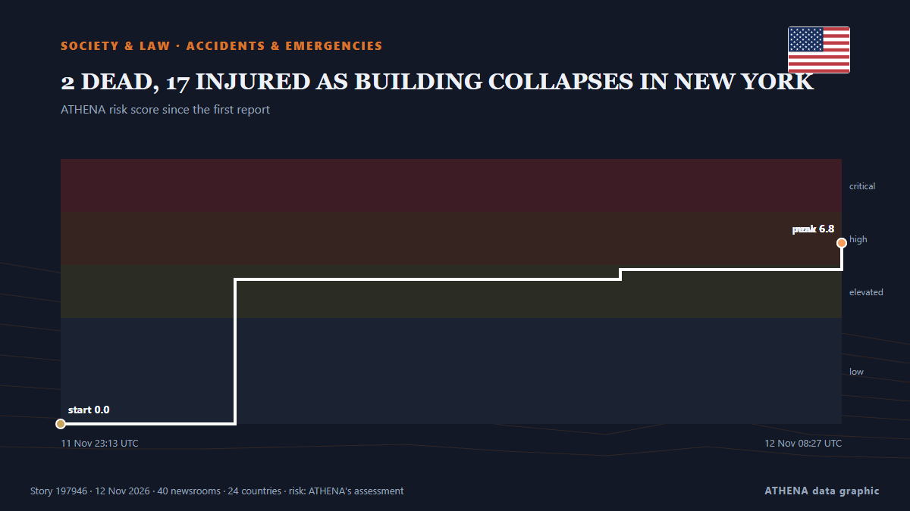

2 DEAD, 17 INJURED AS BUILDING COLLAPSES IN NEW YORK

At least two people are killed and 17 others injured, including seven children, after a three-story building collapses in Brooklyn, New York, on Wednesday, 11… from Daily Tribune
Reported independently by 41 outlets in 24 countries since 11 Nov, first by The Canadian Press (via CityNews); coverage is at its peak. ATHENA rates the risk high (6.8/10), driven mainly by the severity of the harm described and the pace of the reporting — up from 0.0 in the last 24 hours. Confidence is 90% (high), with 41 independent outlets corroborating it and an average source reliability of 74%. Outlets by country: United Kingdom (7), Singapore (3), Australia (3). Coverage: 11 Nov to 12 Nov, 8 hours.
Why it matters: Legal and policy changes alter rights, obligations and public services for the people they reach.
What changed: 44 new reports from 38 outlets in the 24 hours to 12 Nov.
First reported as: New York City building collapse traps people in rubble
How to read this page
- What you are reading
- 41 outlets in 24 countries reported this event. The reports below are listed in the order they appeared; each headline opens the original article. ATHENA writes none of the reports.
- Our reading
- For the record — The reports describe a completed, domestic, commercial or personal matter. We list it so you can see who reported it and when. We are not tracking a risk of wider conflict here.
- How much evidence
- Strong Many independent outlets in many countries describe the same event.
After repeats, off-topic items and stale reports are removed, 30 of the 40 listed reports are counted; 100% of the headlines match the event.
- What this does not mean
- ATHENA measures how an event is reported, not whether it is true. This is not a forecast, a judgement on who is right, or advice.
- What would change it
- Reports from other independent outlets showing a different development, or a firm confirmation or denial from an official source.
Reading R2 · refreshed with every update of this page. ATHENA has not yet published a track record for these readings; when it does, it will be linked here.
At a glance
Selected, scored and written by ATHENA's published methodology. No editor intervenes in individual events. How this is produced ›
| 11 Nov 22:00 UTC | 6 |
|---|---|
| 11 Nov 23:00 UTC | 5 |
| 12 Nov 00:00 UTC | 5 |
| 12 Nov 01:00 UTC | 6 |
| 12 Nov 02:00 UTC | 7 |
| 12 Nov 03:00 UTC | 4 |
| 12 Nov 04:00 UTC | 2 |
| 12 Nov 05:00 UTC | 6 |
| 12 Nov 06:00 UTC | 2 |
| 12 Nov 07:00 UTC | 1 |
| 11 Nov 23:13 UTC | 0.0 |
|---|---|
| 12 Nov 01:17 UTC | 5.5 |
| 12 Nov 05:50 UTC | 5.8 |
| 12 Nov 08:27 UTC | 6.8 |
| 12 Nov 08:27 UTC | 6.8 |
Why these numbers
Importance
Risk
Confidence
The reporting — who reported it, and when
headline as published · opens the original- The Canadian Press (via CityNews) · CanadaFirefighters dig through rubble after NYC building collapse kills 2 and traps people in wreckage
- The Independent · United KingdomNew York City building collapse leaves people trapped in rubble
- Gulf News · United Arab EmiratesTwo dead, at least 17 injured after New York building collapses
- CGTN (World) · China2 dead in New York City building collapse
- Belfast Telegraph · United KingdomNew York City building collapse traps people in rubble
- The Irish News (Belfast) · United KingdomNew York City building collapse traps people in rubble
- The National Herald · United StatesFirefighters Dig through Rubble after NYC Building Collapse Kills 2 and Traps People in Wreckage (Video)
- RTÉ News · IrelandTwo killed after New York building collapses
- CBC News (alternative feed) · Canada2 dead, 4 critically injured after building collapses in New York City
- Free Malaysia Today · MalaysiaOne dead, several injured after New York building collapses
- The Straits Times · SingaporeTwo dead, several injured after New York building collapses
- The Straits Times · SingaporeBuilding collapse in Brooklyn kills at least two, injures more than 10
- Gothamist (New York City) · United StatesBrooklyn building collapse: 2 dead, 7 children among at least 19 injured
- New Straits Times · MalaysiaOne dead, several injured after New York building collapses
- ABC News Australia · AustraliaPeople trapped in wreckage as New York building collapse kills two
- Deccan Herald · IndiaBuilding collapse in Brooklyn kills at least two, injures more than 10
- Express Tribune · Pakistan2 killed, several injured in building collapse in Brooklyn, New York
- Sydney Morning Herald · AustraliaNew York building collapse leaves one dead and ten people injured
- The Jerusalem Post · IsraelTwo dead, 17 injured in partial building collapse in Brooklyn
- Al Jazeera English · QatarThree-storey building collapses in Brooklyn
- The Guardian · United KingdomBrooklyn building collapse kills at least two people and traps others in wreckage
- Times of India · IndiaBrooklyn building collapse: 2 dead, 10 injured as firefighters search for survivors
- The Korea Times · South KoreaFirefighters rescue multiple survivors from rubble after Brooklyn building collapse kills at least 2
- Xinhua (English) — page reader · China1 dead, 10 injured in New York City building collapse
- TRT World · TurkeyBrooklyn building collapse kills two, injures 17 as rescue efforts continue
- Khaosod English · ThailandBuilding collapse in Brooklyn kills at least one, injures 10
- Le Monde (English) · FranceBuilding collapses in Brooklyn, killing 2 and trapping people in wreckage
- Anadolu Agency (English) · Turkey2 killed, several injured in building collapse in Brooklyn, New York
- BBC News · United KingdomSurvivor pulled from rubble of deadly building collapse in New York
- SABC News · South AfricaTwo dead in Brooklyn building collapse, scores injured
- Al Jazeera English · QatarBuilding collapse in Brooklyn kills two, injures more than a dozen
- CNA (Channel NewsAsia) · SingaporeBuilding collapse in Brooklyn kills at least two, injures more than 10
- Sydney Morning Herald · AustraliaSearch for survivors after deadly building collapses in Brooklyn
- Euronews English · FranceAt least two dead while others are trapped in the rubble after a building collapse in New York City
- The Business Standard (Bangladesh) (working feed) · BangladeshBuilding collapse in Brooklyn kills at least two, injures more than10
- APA (English) · AzerbaijanTwo killed, 17 injured in building collapse in New York
- BBC News · United KingdomNew York building collapse kills at least two, officials say
- Indian Express · IndiaNew York’s Brooklyn building collapse kills 2, pregnant woman pulled out alive
- Daily Tribune · Philippines2 DEAD, 17 INJURED AS BUILDING COLLAPSES IN NEW YORK
- The Irish News (Belfast) · United KingdomAt least two dead after building collapses in New York City